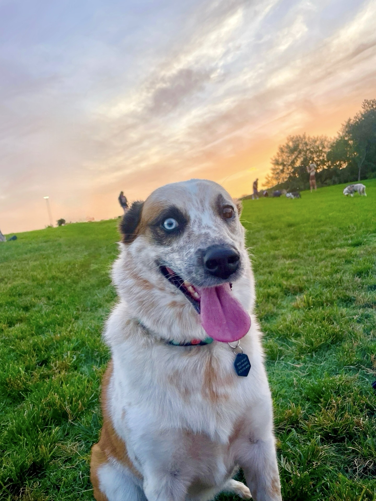

Esther is my 5 year old Australian Sheppard-Red Heeler mix. She's been with me since she was 3 months old!
- Environment: I enjoy being outside and seeing our goregeous world and its colors. Activities include:
- Hiking
- Parks
- Traveling to my favorite biomes: Forests, Snowy Mountains, Blue Beaches
- Favorite Travel Trips:
- Alaskan Mountains
- Bahama Beaches and Oceans
- Malaysian Forests
- Being Active: I'm passionate about movement. In addition general traveling and hiking weekly, hobbies to keep me healthy and happy include:
- Running
- Biking
- Tennis
- Pickleball
- Volleyball
2023 Recreational Volleyball Spring League Champions - Technology: I love digital and mechanical techologies. Here are some of my favorite indoor and outdoor hobbies related to technology:
- Video games: PC games, Nintendo Switch, PS5
- Motorcycle Riding
- Cars
- Laptops and Cameras
- Esther
- Esther is my 5 year old Australian Sheppard-Red Heeler mix. She's been with me since she was 3 months old!